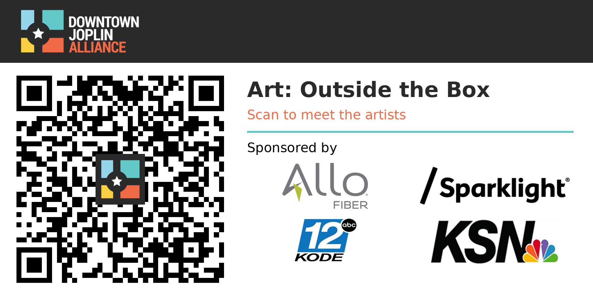

6 × 3 inches here as a sample.
I'm very open to changing the slate's look, size and format. Treat everything here as a first draft, and tell me what you'd like changed.
For now the sponsor logos come from the Downtown Joplin website. Please send me the correct sponsor list and their logo files for this project, and I'll swap them in.
The example artwork on the concept pages is public-domain (Creative Commons CC0) images from the Art Institute of Chicago's open-access collection, used only as stand-ins.
This QR code takes people to https://elishajkmiller.com/downtown-joplin-art/ for now. Once the website page is established and the format of the slate is completed, you will be able to download the correct one from this site.
About the landing page: every code on every box leads to this one page. It opens on a slow loop of the artwork, then shows every piece with its title and artist. Tap any piece to see it full screen at its own shape, and tap the artist link to learn more about them. Because it is one page, the QR never has to change. Adding or fixing an artwork is just an edit to the page.
How it goes on your site (Divi), step by step
There's no new plugin and no database to manage. It's one block of page content, and you edit it the same way you edit Meet the Board.
- Work somewhere safe. If you have a staging copy, we build there. If not, I save the new page as a Draft, so nothing is public until you're happy with it.
- Upload the images. I add the sponsor logos and the artwork photos to your Media Library.
- Create the page. Pages, then Add New, named "Art: Outside the Box".
- Add the block. In Divi, I add a Fullwidth Section with a Fullwidth Code module.
- Paste in the code. Copy it from the export page and paste it into that module.
- Add the real artwork. Swap each sample for the real photo, title, artist, headshot and website link. Every artwork is its own block, and notes at the top of the code show where each piece goes.
- Test it on a phone. We check it together, then publish.
- Point the QR at it. Once the page address is final, I make the slate with that exact address and send it for printing.
After launch, adding, fixing or removing an artwork means editing one block in that same module.